Unofficial study solution; not an official GTU answer key. Answers have not been independently verified. English text reflows; source equations, diagrams and Gujarati retain their original appearance. Use Enlarge image to inspect them.
આ બિનસત્તાવાર અભ્યાસ ઉકેલ છે, સત્તાવાર GTU જવાબવહી નથી. PDF માંથી ગુજરાતી લખાણ સાચું નીકળતું નથી, તેથી દરેક જવાબ મૂળ ચિત્રરૂપે જાળવ્યો છે. વાંચવા માટે ચિત્ર મોટું કરો. મૂળ પ્રશ્ન અને પરીક્ષાના વિકલ્પોની સૂચનાઓ અનુસરો.
Coverage: all five questions and every printed OR alternative are answered: 28 parts. The authentic English questions are retained in both language views; answers are in English and Gujarati. Diagrams are schematic and not to scale.
Printed instructions: attempt all questions; make suitable assumptions; figures on the right indicate full marks; simple and non-programmable scientific calculators are permitted; the English version is authentic.
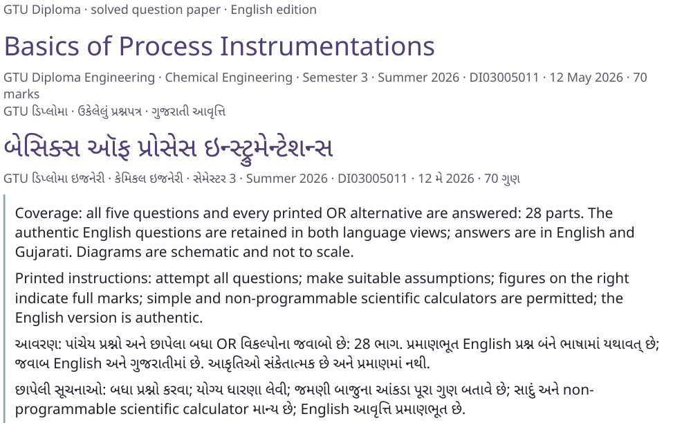
Question 1
Q1 · Instrumentation and calibration
Q.1 (a) · Describe importance of instrumentation in chemical plant. · 3 marks
Instrumentation measures process variables and helps operators monitor and control a chemical plant.
• Temperature, pressure, flow and level measurements keep operation near desired conditions.
• Alarms and independent protective systems help detect dangerous deviations; they do not remove every hazard.
• Trend records support product quality, material and energy efficiency, troubleshooting and maintenance.
• Example: a reactor temperature sensor signals a controller to adjust cooling.
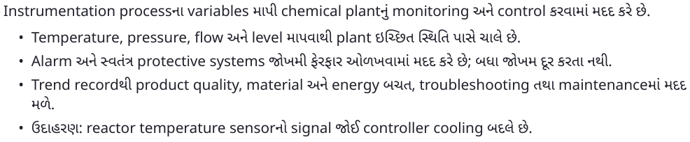
Q.1 (b) · Describe Basic elements of instruments. · 4 marks
Measurand is the quantity to be measured. The instrument chain converts it into a useful indication.
• Primary sensing element first responds to the quantity: a bulb responds to temperature.
• Variable conversion or transducer converts that response into a convenient signal, for example temperature to resistance.
• Signal manipulation / conditioning amplifies, filters or scales the signal without changing its information.
• Transmission carries the signal to a remote point; presentation indicates, records or supplies it to a controller.
• Example: RTD → conditioning/transmitter → cable → temperature display. Not every instrument has a separate physical unit for every function.
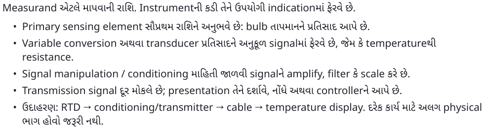
Q.1 (c) · Explain calibration method of any instrument. · 7 marks
Calibration compares an instrument with a traceable reference over its range; adjustment, if needed, is a separate action.
Example: 0–10 bar pressure gauge
1. Isolate and safely depressurize the process connection. Connect the gauge and a suitable traceable reference to a rated hand pressure source; check joints for leaks.
2. Record the as-found indication at 0, 2, 4, 6, 8 and 10 bar as pressure rises; allow each value to settle.
3. Reduce pressure through the same points and record readings again to check hysteresis. Never exceed the gauge or test equipment rating.
4. At each point calculate error = indication − reference. For 5.10 bar indicated at 5.00 bar reference, error = +0.10 bar and correction = −0.10 bar.
5. Compare errors with specified tolerance; only if authorized adjust zero/span and repeat the complete as-left check.
6. Record reference identification, uncertainty, ambient conditions, readings, adjustments, date and next due date.
At 5 bar the example error is +0.10 bar = +1% of the 10 bar span.
Use a suitable reference with adequate uncertainty; isolate hazardous fluids and do not loosen pressurized fittings.
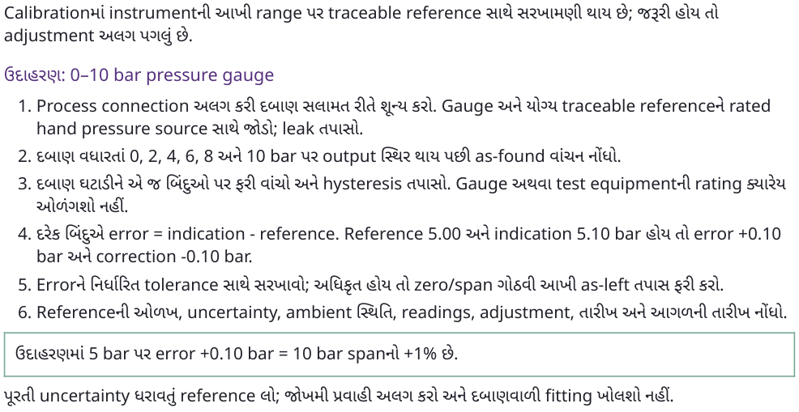
Q.1 (c) · Explain criteria for selection of temperature measurement devices based on static and dynamic characteristics. · OR · 7 marks
Select a temperature instrument for the process range, accuracy and speed required, not on range alone.
Static and dynamic criteria
• Range and span: cover normal and abnormal temperatures without exceeding the sensor rating.
• Accuracy, sensitivity and resolution: choose a device able to distinguish the smallest useful temperature change; state % of reading or span.
• Repeatability, hysteresis and drift: check long-term stability and calibration interval.
• Dynamic response: choose suitable response time/time constant and acceptable lag for the fastest process changes; thermowells and immersion affect response.
• Service: pressure, vibration, corrosion, hazardous-area rating, contact, wiring and installation cost must suit the process.
Example: a suitable RTD can provide stable moderate-temperature measurement; a type-rated thermocouple can serve high temperatures; a pyrometer is useful for an inaccessible hot surface, subject to emissivity and field of view.
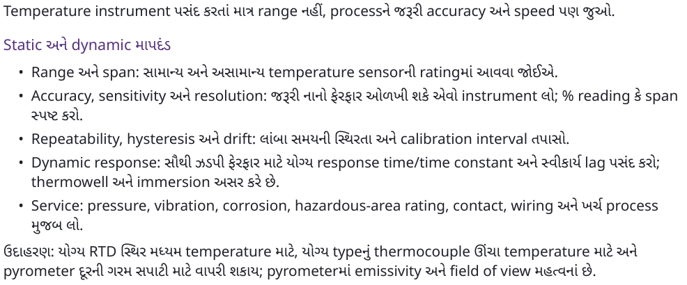
Question 2
Q2 · Temperature and specific gravity
Q.2 (a) · Define: a) Seebeck effect b) Thomson effect · 3 marks
Seebeck effect: a circuit made of two dissimilar conductors with junctions at different temperatures develops a thermoelectric emf; this is the basis of a thermocouple.
Thomson effect: reversible heat is absorbed or released when current flows through one homogeneous conductor with a temperature gradient; its direction depends on material and current direction.
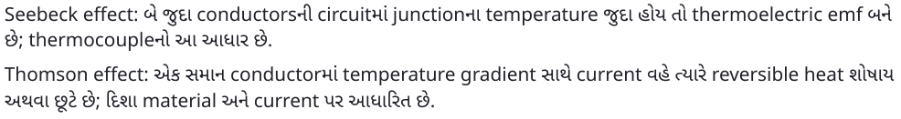
Q.2 (b) · Explain Direct level measurement of Probe and tape. · 4 marks
Principle: A graduated tape and probe directly locate the liquid surface relative to a known tank datum.
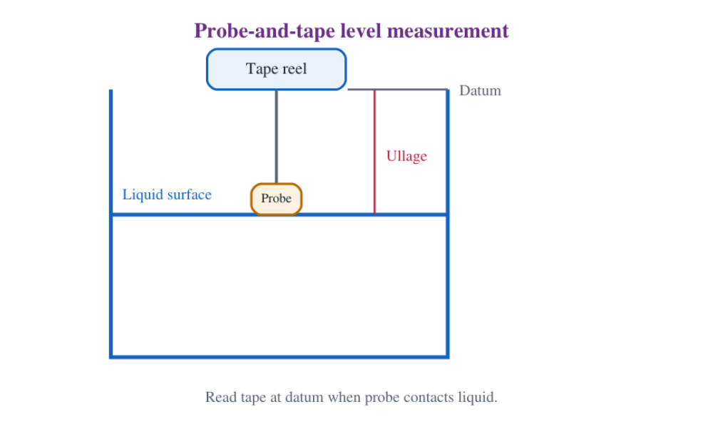
Schematic; not to scale.
Construction — part and purpose
1. A graduated tape on a reel carries a suitable weighted or contact probe.
2. A fixed reference point on the tank provides a repeatable measurement datum.
Working — step and reason
1. Lower a suitable electrical contact probe until it detects the surface. Alternatively lower a dip tape, withdraw it and inspect the wetted line.
2. Use the datum and calibrated tape to read the distance. For ullage, subtract surface-to-datum distance from the known datum-to-bottom height; for an innage tape read depth using its calibration.
Avoid measurement during turbulence; apply approved grounding and hazardous-area procedures for flammable liquids.

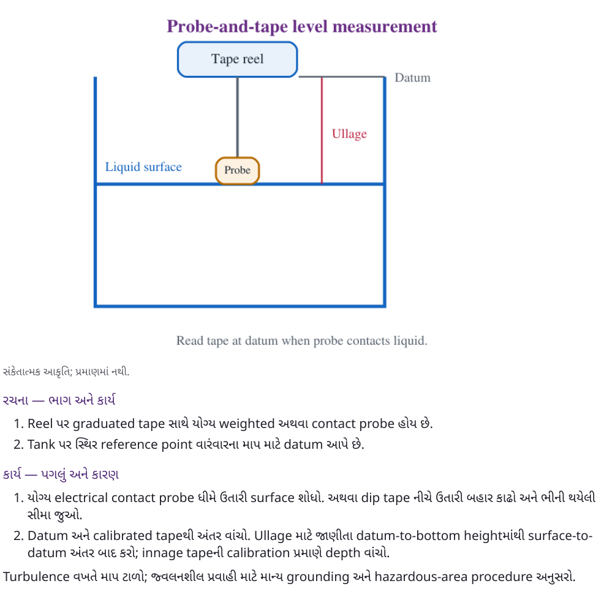
Q.2 (c) · Explain principle, construction & working of Radiation Pyrometer with neat figure. · 7 marks
Principle: A radiation pyrometer infers the temperature of a viewed surface from its thermal radiation without touching it. For an ideal grey surface, total emitted radiation varies with emissivity and the fourth power of absolute temperature.

Schematic; not to scale.
Construction — part and purpose
1. A lens or mirror collects radiation from the target and defines the field of view.
2. A radiation detector converts the focused energy to an electrical signal.
3. Signal conditioning, emissivity setting and calibrated display show temperature.
Working — step and reason
1. Aim at the hot surface and ensure it fills the specified field of view.
2. The detector responds to the collected radiation; electronics convert the signal using the calibration and emissivity setting.
3. Read the inferred surface temperature; correct or assess reflection and transmission errors.
Useful for hot or moving objects. Emissivity, reflected radiation, smoke, windows and a partly filled field of view can cause error; the device does not automatically measure core temperature.
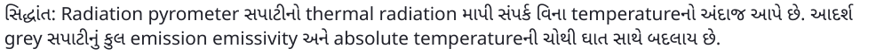
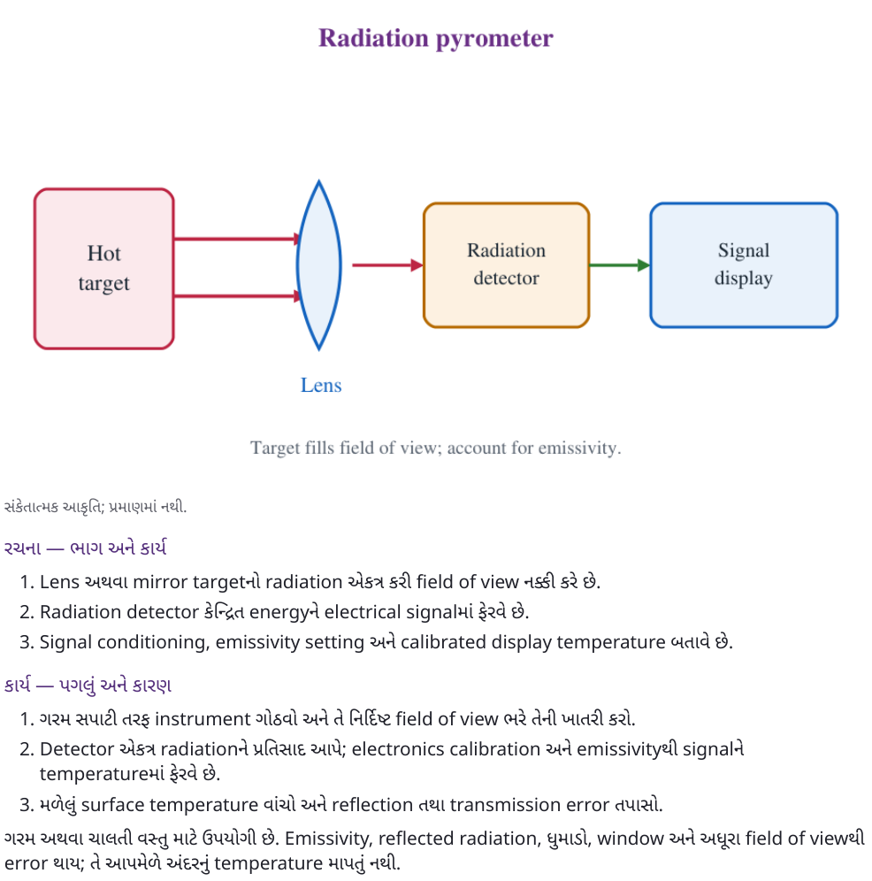
Q.2 (a) · Describe mercury in glass thermometer. · OR · 3 marks
A mercury-in-glass thermometer uses the expansion of mercury in a glass bulb and narrow capillary to indicate temperature.
• The mercury column moves against a graduated scale; the bulb must reach thermal equilibrium with the object.
• It is fragile, responds with delay and mercury is toxic; use only where permitted.
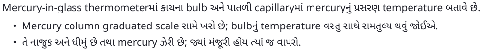
Q.2 (b) · Explain Hydrometer for specific gravity measurement. · OR · 4 marks
Principle: A floating body displaces its own weight of liquid (Archimedes’ principle). Its immersion varies with liquid density.
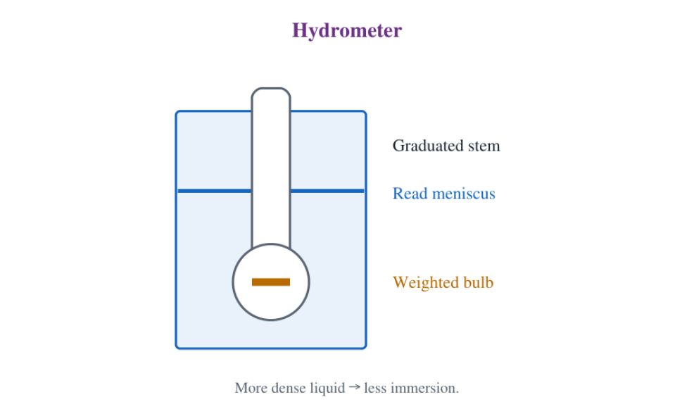
Schematic; not to scale.
Construction — part and purpose
1. A sealed glass float has a weighted bulb and a graduated narrow stem.
2. A deep sample cylinder allows the float to move freely.
Working — step and reason
1. Place the clean hydrometer in the liquid without touching the container.
2. Allow it to settle and read the meniscus at eye level on the specific-gravity scale.
3. Report the calibration temperature and correct for temperature if specified.
liquid gives less immersion. Temperature, bubbles and contamination can affect the reading.
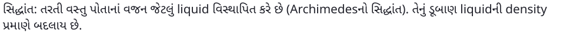
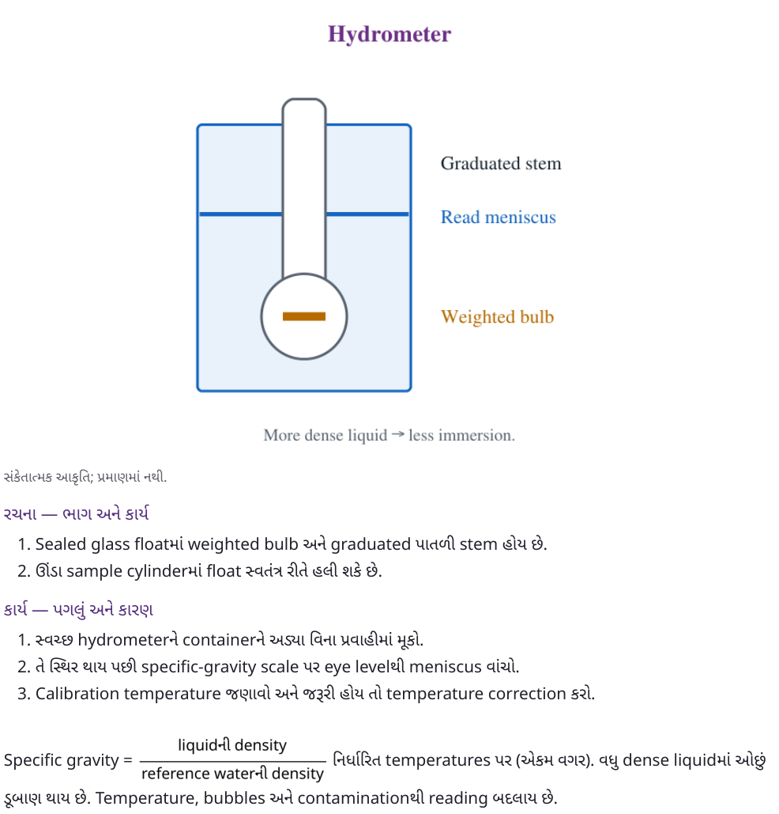
Q.2 (c) · Explain principle, construction & working of industrial thermocouple with neat figure. · OR · 7 marks
Principle: The Seebeck effect produces an emf related to the temperatures of the measuring and reference junctions of two dissimilar metals.
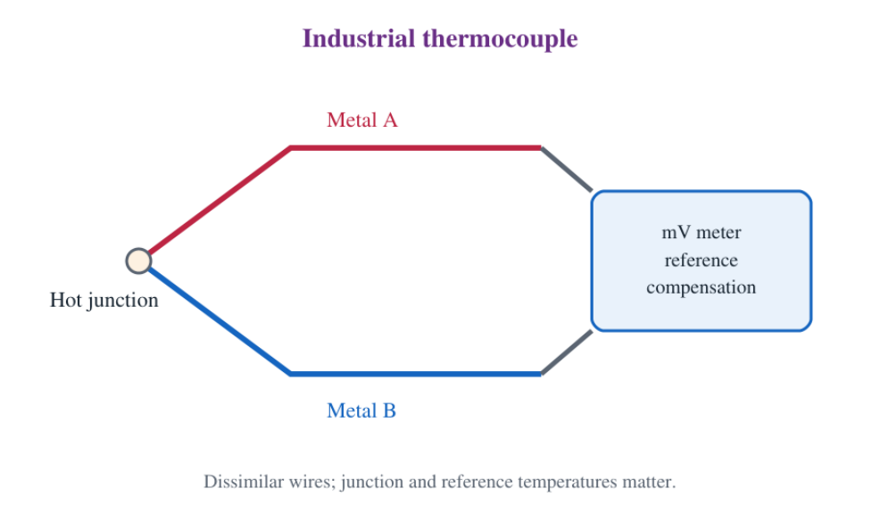
Schematic; not to scale.
Construction — part and purpose
1. Two dissimilar metal wires are joined at the measuring (hot) junction.
2. Insulation and a protective sheath or thermowell suit the process.
3. The other ends connect to a millivolt instrument with reference-junction compensation and type-specific calibration.
Working — step and reason
1. Insert the measuring junction to the specified depth.
2. A temperature difference between measuring and reference junctions generates a small emf.
3. The instrument compensates the reference temperature and converts emf using the thermocouple calibration.
Use the correct wire and extension type; poor contacts, electrical noise, drift or wrong compensation cause error. Range depends on thermocouple type.
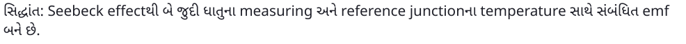
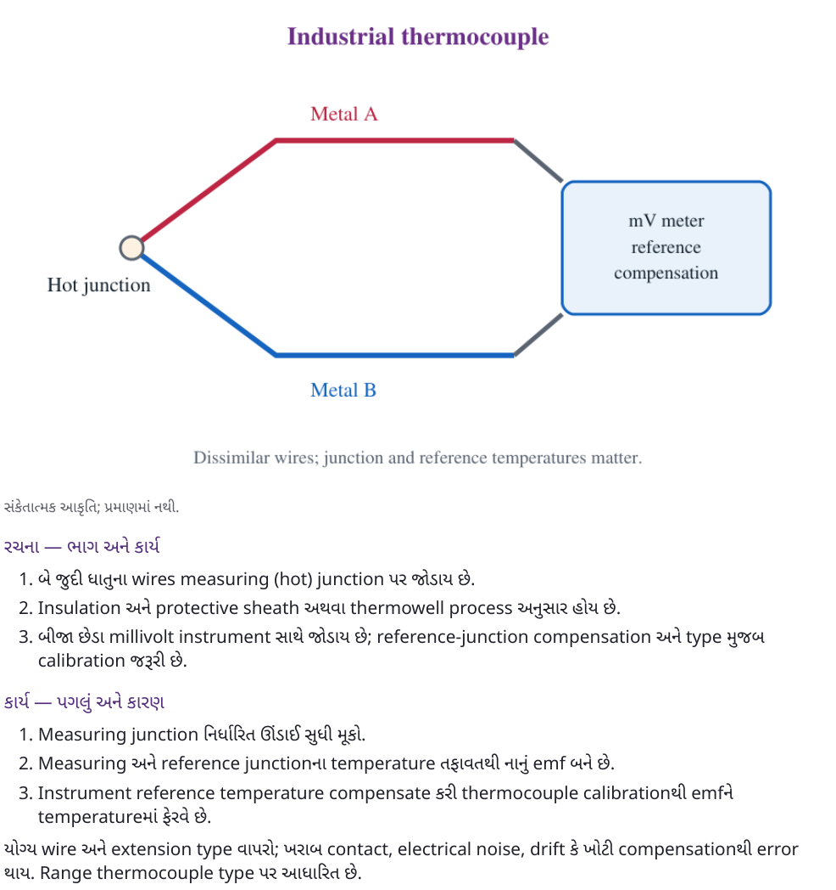
Question 3
Q3 · Pressure, viscosity and temperature
Q.3 (a) · Draw the neat and clean figure of Bourdon tube gauge. · 3 marks
A C-shaped hollow elastic tube has a fixed pressure inlet and a free end linked to a pointer.

Schematic diagram, not to scale.
• Pressure tends to straighten the tube; the linkage moves the pointer.
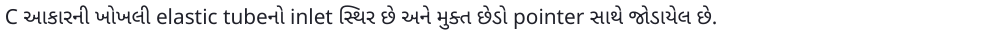
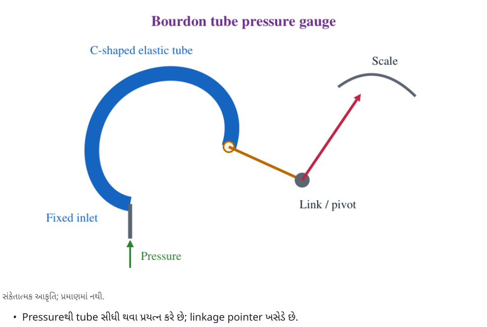
Q.3 (b) · Describe Rotating cylinder for viscosity measurement. · 4 marks
Principle: The torque needed to rotate a cylinder relative to liquid depends on the liquid viscosity, speed and geometry.

Schematic; not to scale.
Construction — part and purpose
1. A cup holds the test liquid; a coaxial cylinder or spindle is immersed.
2. A motor drives one member at a known speed; a torque sensor or calibrated spring measures resistance.
Working — step and reason
1. Fill to the specified level and control the sample temperature.
2. Rotate at the prescribed speed and read the steady torque.
3. Use the geometry and instrument calibration to obtain viscosity; for non-Newtonian fluids report speed/shear conditions.
Air bubbles, end effects, slip and temperature change can alter the result.
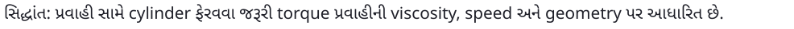
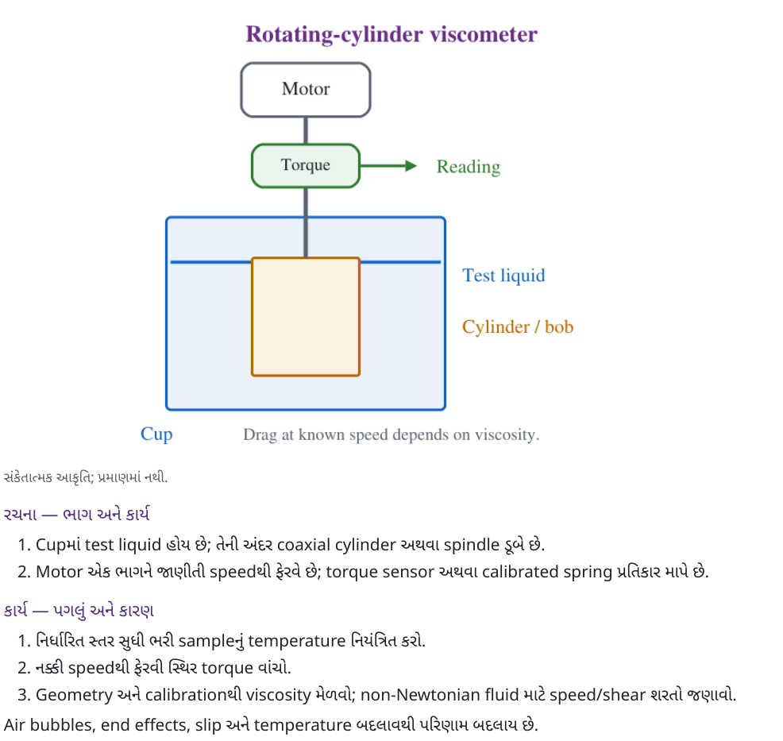
Q.3 (c) · Explain principle, construction & working of Bimetallic Thermometer with neat figure. · 7 marks
Principle: Two bonded metals with different coefficients of thermal expansion bend when temperature changes.
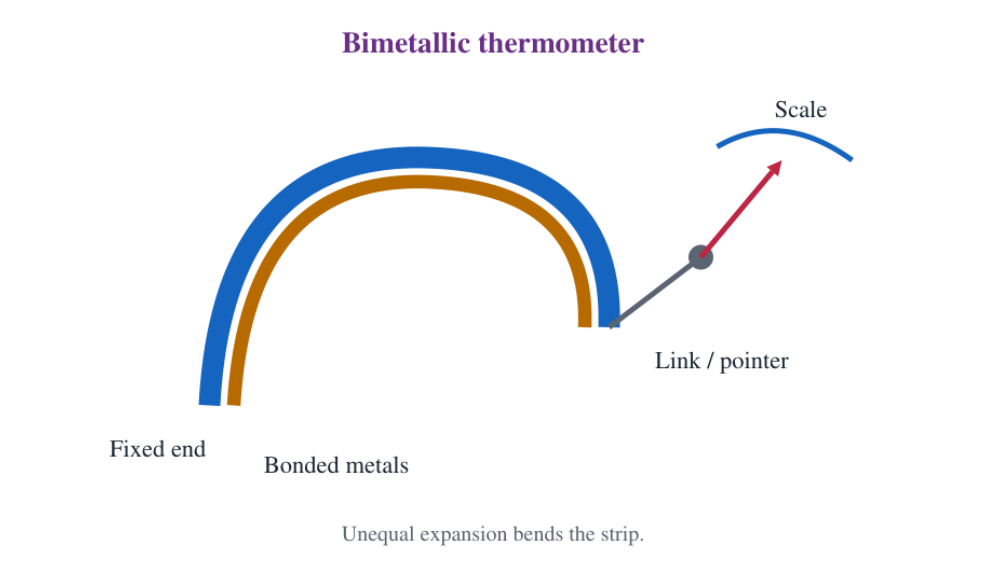
Schematic; not to scale.
Construction — part and purpose
1. Bond two dissimilar metal strips to form a spiral or helix.
2. Fix one end in a protective stem; connect the free end to a spindle and pointer.
3. A calibrated dial displays the temperature.
Working — step and reason
1. Insert the sensing stem in the medium and allow it to reach temperature.
2. Unequal expansion bends or twists the bonded element.
3. Free-end motion rotates the pointer against the calibrated dial.
Simple and self-powered, but thermal lag, hysteresis, corrosion and vibration limit accuracy. Avoid exceeding its rated range.
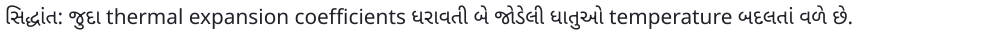
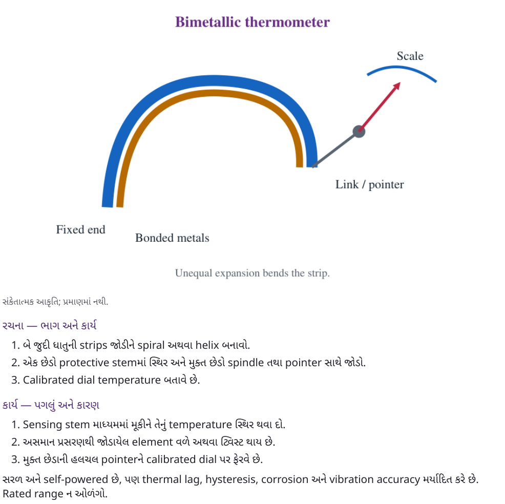
Q.3 (a) · Explain Absolute Pressure Gauge. · OR · 3 marks
An absolute pressure gauge measures pressure relative to an evacuated reference, not the local atmosphere.
• A sensing element such as a diaphragm compares process pressure with a sealed near-vacuum chamber.
• Pabsolute = Pgauge + Patmosphere; for example, 2 bar gauge at 1 bar atmosphere is 3 bar absolute.
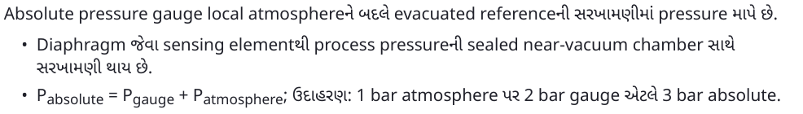
Q.3 (b) · Explain Hair hygrometer for humidity measurement. · OR · 4 marks
Principle: Prepared hair length changes with relative humidity; a lever amplifies the small motion.

Schematic; not to scale.
Construction — part and purpose
1. Prepared hair or suitable hygroscopic fibre is held under tension.
2. A lever and pointer connect the free end to a relative-humidity scale.
Working — step and reason
1. Moist air changes the moisture absorbed by the hair; prepared human hair generally lengthens as RH rises.
2. The lever moves the pointer on the calibrated RH scale.
Slow response, hysteresis, contamination and temperature effects require maintenance and calibration.
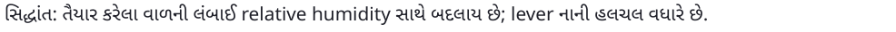
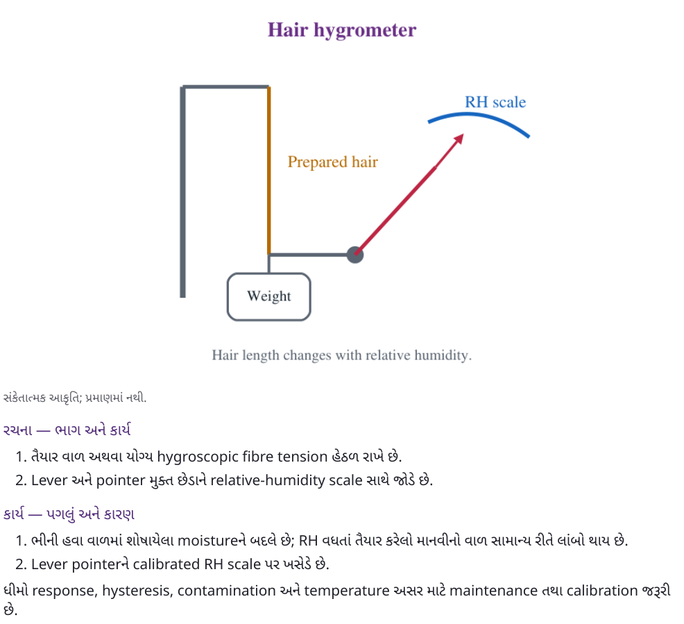
Q.3 (c) · Explain principle, construction & working of Dead weight Gauge with neat figure. · OR · 7 marks
Principle: At equilibrium a known downward force on a piston balances fluid pressure over its
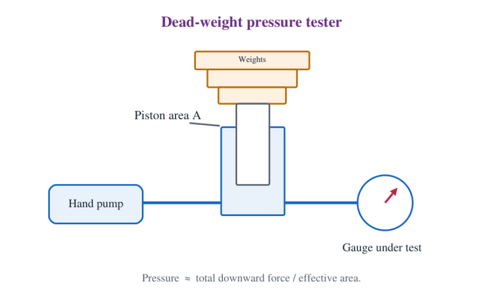
Schematic; not to scale.
Construction — part and purpose
1. A closely fitted vertical piston and cylinder contain a clean pressure fluid.
2. Known calibrated masses, including the piston mass, supply the force.
3. A hand pump and connections apply pressure to the gauge under test.
Working — step and reason
1. Choose the masses for the desired pressure and place them on the piston.
2. Pump fluid until the piston floats freely; rotate gently where the instrument procedure specifies to reduce friction.
3. Compute pressure from total force and effective area, compare the gauge reading, and repeat at several points.
Example: total mass 10 kg, effective area 1 cm² = 0.0001 m² and g = 9.81 m/s² give 981,000 Pa = 9.81 bar gauge approximately. Account for local gravity, buoyancy, area, fluid head and uncertainty as required; depressurize before disconnecting.

Question 4
Q4 · Level, pressure and flow
Q.4 (a) · Write short note on Sight glass for level measurement. · 3 marks
A sight glass is a transparent tube or window connected to a vessel to show liquid level directly.
• In a gauge glass, connections to the liquid space below and vapour space above equalize pressures, so the visible liquid surface follows the vessel level.
• Use isolation valves, guards and suitable pressure/temperature-rated glass; dirty, opaque or hazardous fluids need special arrangements.
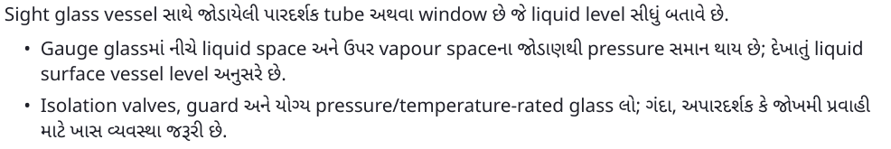
Q.4 (b) · Explain Manometer Pressure Gauge. · 4 marks
A U-tube manometer uses hydrostatic balance to compare a process pressure with a reference pressure.

A gas pressure above atmospheric depresses the left interface.
1. Connect one limb to the process and leave the other open to atmosphere for a gauge-pressure measurement.
2. Let the manometric liquid settle and measure the vertical difference h between the two interfaces.
3. For a light gas and a liquid of density ρ, Pgauge ≈ ρgh. Correct for fluid density and elevation where relevant.
Choose a compatible liquid and safe pressure range; the simple expression is not valid unchanged for two heavy process fluids.
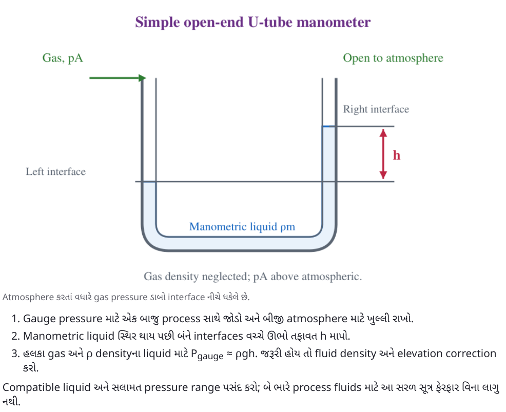
Q.4 (c) · Explain principle, construction & working of Diaphragm box method for level measurement with neat figure. · 7 marks
Principle: The hydrostatic pressure of liquid above a submerged diaphragm increases approximately as ρgh for a vented tank.

Schematic; not to scale.
Construction — part and purpose
1. A sealed air-filled box has a flexible, liquid-facing diaphragm.
2. A leak-tight tube connects the box to a pressure indicator calibrated in level units.
3. The box is fixed at a known datum below the measuring range.
Working — step and reason
1. Rising liquid head deflects the diaphragm and compresses the trapped air.
2. The air pressure is transmitted through the tube to the gauge.
3. With known liquid density and negligible diaphragm stiffness effect, the calibrated pressure indicates the liquid height above the diaphragm.
Keep the system airtight; leaks, diaphragm stiffness, density changes and gas dissolution introduce error. Closed tanks need compensation for vessel gas pressure.
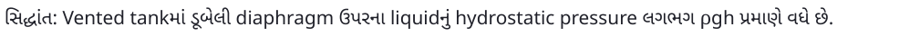
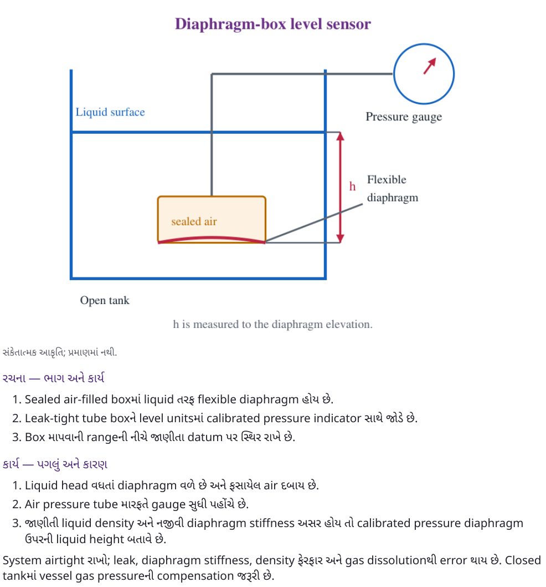
Q.4 (a) · Explain different temperature scale. · OR · 3 marks
Temperature scales use different zero points and divisions. The water fixed points below apply at 1 atm.
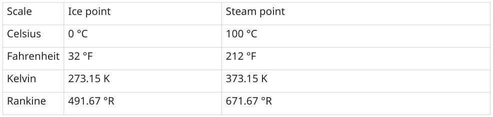
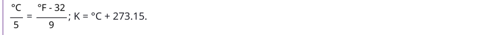
Example: 20 °C = 68 °F = 293.15 K. Kelvin and Rankine are absolute scales.
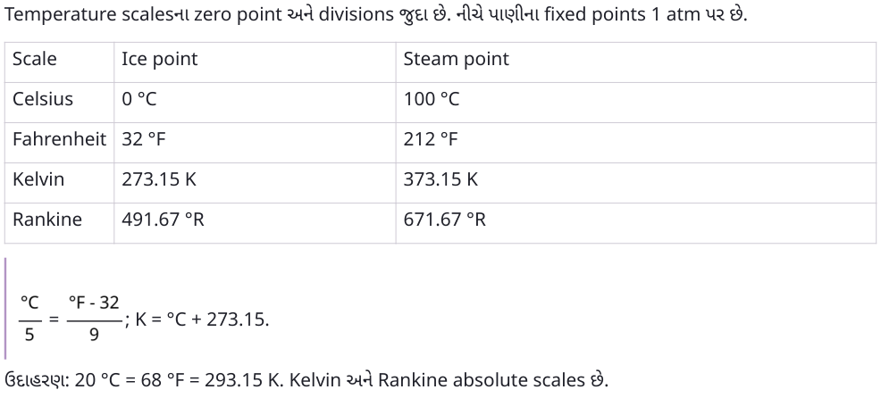
Q.4 (b) · Explain capillary tube for viscosity measurement. · OR · 4 marks
A capillary viscometer infers viscosity from liquid flow through a fine tube. For steady, fully developed laminar flow of a Newtonian liquid in a circular tube:
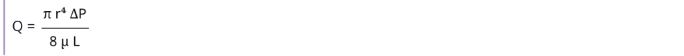
Here r is radius, L length, ΔP pressure drop, μ dynamic viscosity and Q volume flow rate.
Maintain a known pressure difference and constant temperature; collect volume V in time t:
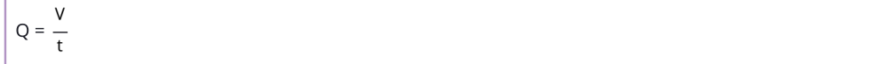
Use the calibrated tube and equation to find μ. For a timed gravity capillary with varying head, use its own calibration, commonly μ = Kρt. End effects, bubbles and turbulent flow cause error.
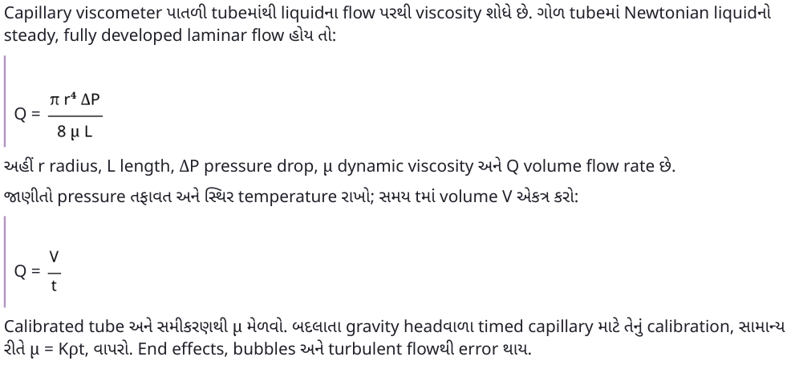
Q.4 (c) · Explain principle, construction & working of Target Meter with neat figure. · OR · 7 marks
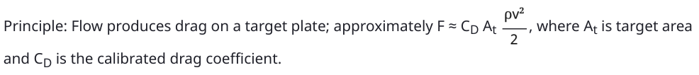

Schematic; not to scale.
Construction — part and purpose
1. A target plate is mounted in the flowing pipe.
2. A stem transmits force to a strain gauge, force balance or other transducer.
3. A calibrated indicator converts the force signal to flow rate.
Working — step and reason
1. Fluid flows around the plate and exerts drag on its upstream face.
2. The sensor measures the transmitted force; for a fixed target and density, force rises roughly with velocity squared.
3. Calibration and pipe area relate the signal to volumetric flow.
Density, fouling, wear, flow profile and permanent pressure loss affect service; use the manufacturer’s calibration.
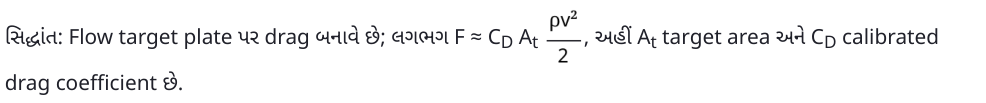
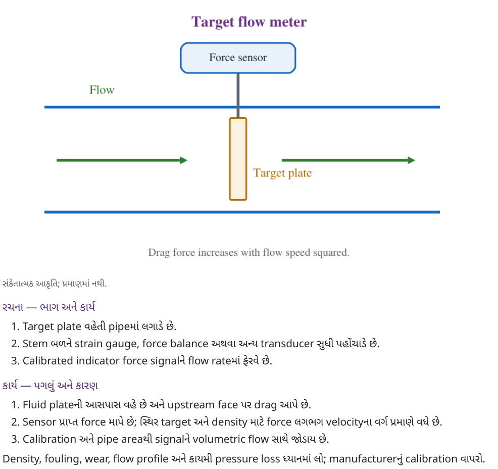
Question 5
Q5 · Control systems and automation
Q.5 (a) · Compare Servo and Regulatory control. · 3 marks
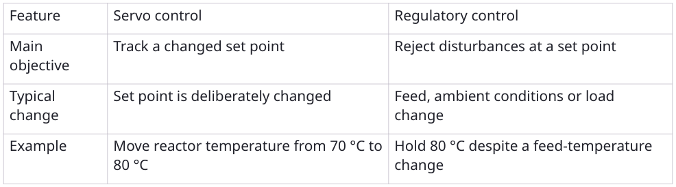
The same feedback loop can perform both jobs; neither guarantees perfect control.
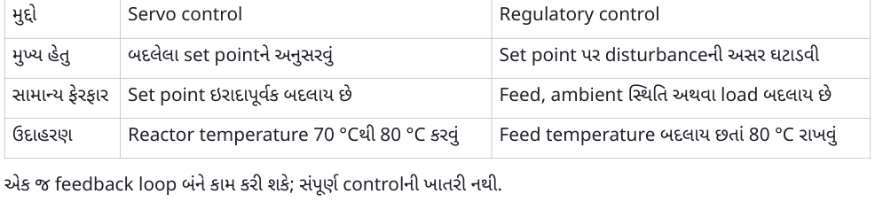
Q.5 (b) · Compare PLC and DCS system. · 4 marks
![Q.5 (b): preserved source formula, table or diagram, page 34. Extracted text context (formula notation may be incomplete): Feature PLC DCS Typical role Machine / discrete sequence and interlocks Integrated plant-wide continuous process control Architecture Rugged programmable controllers with local/remote I/O Multiple distributed controllers with integrated operator engineering Example Conveyor or packaging machine Refinery process units and control room Note Can also implement analog PID Can also handle discrete logic; modern capabilities overlap](summer-2026.assets/0055.webp)
Selection depends on reliability, integration, lifecycle, cybersecurity and the actual application, not names alone.
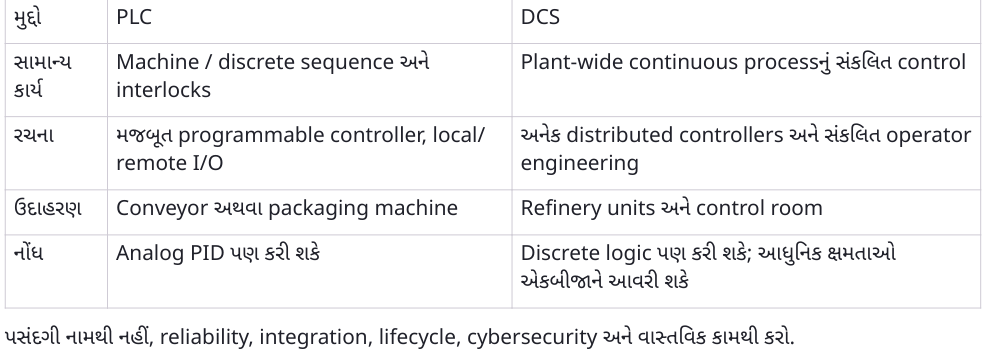
Q.5 (c) · List out various types of controllers. Explain any one in detail. · 7 marks
Common controllers include on–off, P, I, PI, PD and PID. Let e = set point − measured value and choose controller action for the process.
1. Proportional (P) controller
u = ubias + Kce
The output changes in proportion to present error. A constant load disturbance can leave a steady offset. Example: ubias = 50%, Kc = 2 and e = +2% gives u = 54%, before output limits.
2. Proportional–integral (PI) controller

The proportional term responds immediately; the integral term accumulates error and can remove steady offset in a stable loop. Ti is integral time. Excessive integral action may cause oscillation or windup, so tune and use anti-windup and output limits.
Choose direct/reverse action to suit the valve and process. Interlocks and independent safety shutdowns are not replaced by the controller.
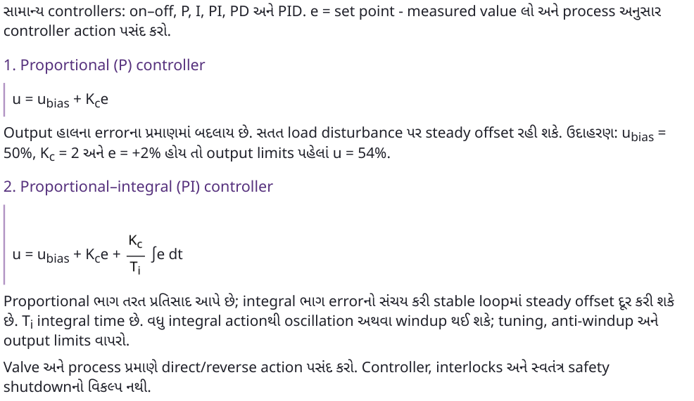
Q.5 (a) · Describe feedback and feed forward control system. · OR · 3 marks
Feedback compares measured output with its set point and acts after a deviation appears; for example a temperature controller adjusts cooling.
• Feedforward measures a disturbance and changes the manipulated input before its effect reaches the output; for example adjust steam when feed flow changes.
• Feedforward needs a useful process model and cannot correct unmeasured disturbances by itself; it is often combined with feedback.
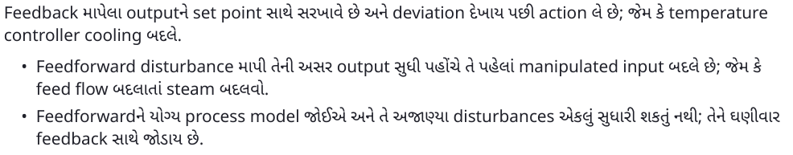
Q.5 (b) · Explain advantage and disadvantage of SCADA system. · OR · 4 marks
SCADA (Supervisory Control and Data Acquisition) collects and presents data from geographically distributed sites and can send authorized supervisory commands.
Advantages
• Remote monitoring, alarms, trends and historical records.
• Central overview reduces travel and helps diagnose faults and coordinate operations.
Disadvantages
• Network failure, latency or inaccurate field data can affect visibility and commands.
• Cybersecurity, maintenance, training and integration cost are significant; local safety and controls remain necessary.
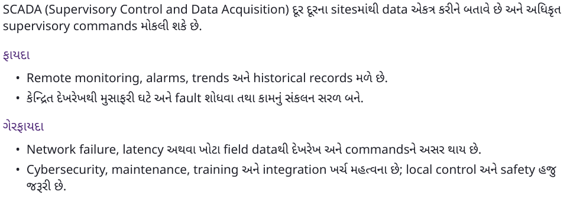
Q.5 (c) · Explain Chemical Reactor Control system with its block diagram. · OR · 7 marks
Principle: Feedback control compares measured reactor temperature with its set point and manipulates cooling flow to reduce the deviation.
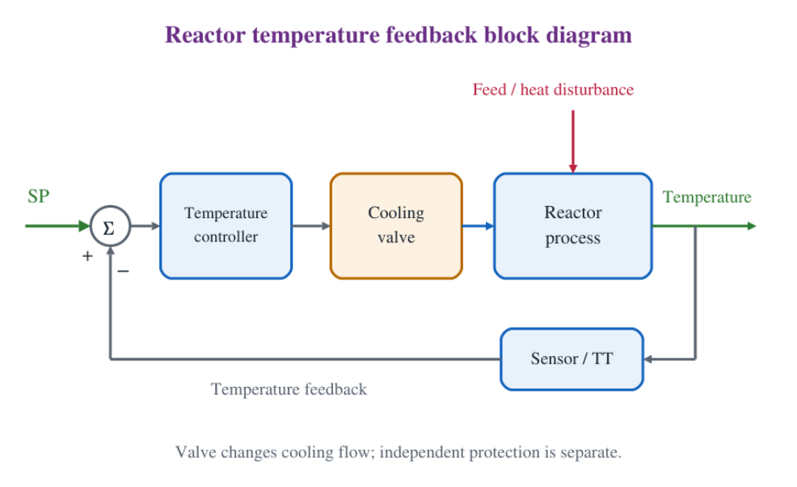
Schematic; not to scale.
Construction — part and purpose
1. Reactor with a cooling jacket or coil is the process; reactant flow and heat release can disturb temperature.
2. A temperature sensor/transmitter (TT) sends the measured temperature to the temperature controller.
3. The controller drives a final control valve in the cooling-water line.
Working — step and reason
1. Operator enters the desired temperature as set point; TT continuously measures reactor temperature.
2. The controller compares measurement and set point and calculates an output with the correct action.
3. For an exothermic reactor, a rise in temperature may command more cooling; the valve changes cooling flow and the measurement feeds back.
4. Tune and verify the loop across the expected operating range.
Cooling-water supply, actuator limits and sensor failure affect performance. Independent high- temperature alarms, trips and other protection must be designed separately.
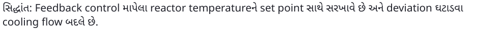
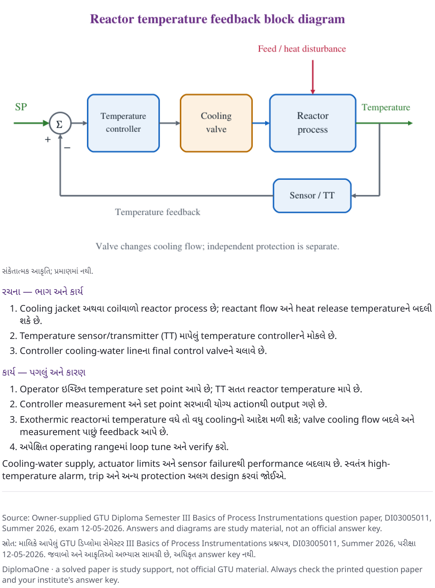